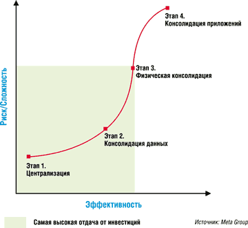
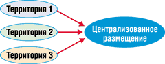
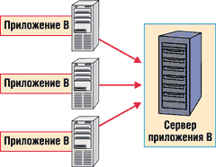
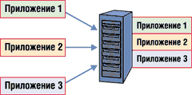

Андрей Борзенко
Сегодня трудно спорить с тем, что консолидация серверов стала насущной потребностью для бизнеса. Не секрет, что основные усилия ИТ-администраторов компаний часто направлены на упрощение компьютерной среды предприятия и снижение затрат. Объединение десяти или даже ста серверов в один может обеспечить значительные преимущества. При этом само по себе число серверов не служит четкой мерой издержек или сложности среды. Жизненно важные параметры в определении общей стоимости оборудования и эффективности серверной среды - распределение серверов, их использование и управление ими.
По мнению большинства экспертов, чтобы получить максимальный выигрыш от консолидации, в компаниях должны тщательно проанализировать инфраструктуру, выделить основные причины низкой ее эффективности и сосредоточиться на проектах, которые обеспечивают наибольшую отдачу от инвестиций. Для этого требуется анализ бизнеса и требований к инфраструктуре для каждого крупного приложения, а также оценка их потенциального вклада для различных уровней консолидации. В частности, это означает необходимость исследования ИТ-процессов с целью повышения общей эксплуатационной эффективности. Консолидация также должна быть сбалансирована относительно потребностей в так называемой распределенной избыточности, которая предназначена для поддержки восстановления систем и бизнес-процессов после сбоя оборудования. В долговременной перспективе только всесторонняя и хорошо продуманная стратегия консолидации может обеспечить длительный положительный результат с точки зрения эффективности бизнеса.
Параметры для анализа
Легко представить себе десяток серверов, обслуживающих одно приложение в десятке различных точек, причем все эти серверы имеют различные конфигурации и требуют локальной поддержки. Понятно, что в такой ситуации эксплуатационные расходы могут стать просто непомерными. Теперь допустим, что рабочая нагрузка этого же приложения распределена между десятком идентичных серверов, расположенных в одной стойке и управляемых как единое устройство при помощи автоматизированных средств. Такая архитектура может оказаться намного более эффективным, масштабируемым и доступным решением.
Ответ на вопрос, стоит ли объединять этот десяток серверов в один или несколько более крупных, зависит от специфических характеристик приложения, рабочей нагрузки, потребностей бизнеса и ИТ-среды. С другой стороны, крупные вертикально интегрированные серверы хороши для обслуживания некоторых приложений, но с ними тоже возникают специфические для этой архитектуры сложности, особенно если на них работает несколько приложений с разными характеристиками рабочих нагрузок. Большой, сложный сервер создает более "жесткую" среду для работы приложений. Многие приложения в силу ограничений, заложенных при их создании, не способны воспользоваться преимуществами серверов с числом процессоров более четырех или плохо "уживаются" с иными приложениями, выполняющимися на этом же сервере. Такие серверы труднее расширять, обновлять или изменять их конфигурацию. Стоимость их аппаратного обеспечения при сравнимых показателях производительности выше, развертывание сложнее, а добавление средств восстановления системы после сбоя также обходится значительно дороже.
Из-за такого рода проблем ИТ-организации стараются более внимательно учитывать все переменные этого уравнения, перед тем как приступать к реализации дорогостоящих и потенциально разрушительных проектов консолидации. Настоящей целью таких проектов должно быть не просто уменьшение общего числа серверов, но оптимизация их количества, распределения и управления ими, что обеспечит наибольшую отдачу на каждый потраченный доллар. Наилучшее архитектурное решение зависит от специфических требований бизнеса и приложений, а также от эффективности ИТ-процессов и рутинной деятельности.
Этапы консолидации
Для многих ИТ-администраторов консолидация по-прежнему ассоциируется с большими ЭВМ, поддерживающими работу множества приложений для тысяч пользователей. Хотя это один из возможных сценариев консолидации, он не обязательно самый эффективный по стоимости, и случаи, когда следует начинать именно с него, очень редки. Специалисты корпорации Intel (http://www.intel.ru) рекомендуют использовать некую программу, состоящую из нескольких этапов, которая обеспечивает более практичный и всесторонний подход к консолидации на предприятии.
Первый этап - централизация. Это означает консолидацию географически распределенных серверов в пределах централизованного центра данных - одного или более.
Второй этап - консолидация данных. Имеется в виду консолидация баз данных и/или устройств хранения для того, чтобы сделать данные более доступными и управляемыми.
Третий этап - физическая консолидация, укрупнение за счет объединения серверов, работающих под управлением одинаковых ОС и выполняющих одинаковые приложения в одну, более мощную систему.
Четвертый этап - консолидация приложений. Под ней подразумевается размещение различных приложений на нескольких разделах одного большого сервера или на мэйнфрейме.
Весьма важна последовательность этих шагов. Вначале перечислены наиболее эффективные и характеризуемые меньшим риском меры, за ними следуют опции, обычно требующие более масштабных инвестиций и отличающиеся меньшей окупаемостью. По сведениям аналитиков компании Giga Information Group, большинство предприятий смогут воспользоваться 90% преимуществ консолидации инфраструктуры, прибегнув только к первым двум шагам, в соединении с автоматизацией и централизацией процессов управления в масштабе всего предприятия. Специалисты из Meta Group высказывают мнение, что значительные преимущества достигаются за счет реализации первых трех шагов (рис. 1), а вот консолидация приложений для многих традиционных серверов может быть неоправданной.
|  | Рис. 1. Соотношение рисков и преимуществ при консолидации.
|
Централизация
Итак, в качестве первого шага консолидации предприятия следует рассмотреть концентрацию распределенных серверов в пределах единого центра данных или сравнительно небольшого числа региональных центров (рис. 2). Очевидное преимущество этого решения в том, что упрощается выделение персонала поддержки для развертывания и управления системами и его работа, снижается степень дублирования опытных кадров. Централизация также облегчает использование стандартизованных конфигураций и процессов управления, создание рентабельных систем резервного копирования для восстановления данных после сбоя и поддержания связности бизнеса. Упрощается и решение вопросов качественного контроля за состоянием окружающей среды и обеспечения физической защиты. Может быть улучшена и сетевая безопасность, поскольку серверы оказываются под защитой единого, централизованно управляемого межсетевого экрана (брандмауэра).
|  | Рис. 2. Схема централизации.
|
Как любой процесс объединения, централизация может оказаться и весьма сложной задачей, затраты, риски и преимущества которой должны быть тщательно взвешены. Для реализации поставленной цели, как правило, необходимо расширять существующие центры данных или строить новые. Речь также идет о перераспределении ИТ-персонала и возможных затратах на переобучение и наем новых сотрудников.
Вообще говоря, централизация не является универсальным решением для любого приложения. Дело в том, что если серверы будут удалены от местоположения пользователей, требования к сети и время отклика приложения могут значительно возрасти. В этом случае следует тщательно оценить стоимость сетей WAN и ожидаемую степень удовлетворенности пользователей. Служба каталогов и служба регистрации входа пользователей также должны быть интегрированы, однако рабочие нагрузки на системы обеспечения безопасности и аутентификации могут при этом значительно возрасти. Перемещенные серверы и связанная с ними инфраструктура должны быть соответственно модернизированы, чтобы отвечать новым требованиям, и эти затраты необходимо тщательно взвесить при оценке потенциальной отдачи от капиталовложений в проект консолидации.
Консолидация данных
В корпоративной среде консолидация данных в пределах меньшего числа централизованных баз данных и систем хранения может обеспечить значительную экономию. Это не только упрощает администрирование данных и систем хранения и снижает стоимость поддержки, но может также повысить доступность самих данных для пользователей и приложений в рамках всего предприятия - а это важный компонент эффективной интеграции электронного бизнеса.
По мнению одного из экспертов компании Meta Group, самый большой выигрыш от консолидации при минимальных затратах получается за счет хорошо продуманного доведения программы консолидации серверов до фазы консолидации систем хранения данных.
Кластерные базы данных
Недавний прогресс, достигнутый в разработке решений на основе кластерных баз данных, предлагает руководителям ИТ-подразделений более простой и эффективный набор опций для консолидации баз данных. Теперь почти все крупные поставщики баз данных, включая Oracle, IBM и Microsoft, поддерживают кластеризацию больших баз данных в пределах нескольких доступных по цене серверов. Имеются новые средства автоматизации или, по крайней мере, упрощения деления данных, некоторых из них даже позволяют выполнять динамическое перераспределение баз данных на основе шаблонов доступа к данным в операционной среде.
Современные стандартизованные аппаратные средства межсоединений могут обеспечить довольно широкую полосу пропускания с низкой латентностью, пригодную для коммуникаций и передачи данных между серверами кластеров. Архитектура виртуального интерфейса (Virtual Interface Architecture - VIA) открывает дорогу новым типам межсоединений, построенным на технологиях Fibre Channel и PCI-X. В скором времени на рынке в массовом количестве должны появиться продукты, построенные на технологии InfiniBand. Они смогут обеспечить еще больший уровень масштабируемости и пропускной способности для реализации функций ввода-вывода. Эти технологии в значительной степени улучшили характеристики, распределение ресурсов и совместное использование данных для кластерных решений.
Улучшилась также и управляемость. Кластер баз данных может быть установлен, сконфигурирован и управляться как единое целое, так что все функции управления могут быть выполнены всего один раз и автоматически распределены в пределах кластера.
Среди преимуществ кластеризации баз данных - более низкая стоимость аппаратного обеспечения, более простое развертывание, пошаговое масштабирование и более высокий общий уровень готовности данного решения. Предприятия могут поддерживать большие, консолидированные базы данных без необходимости перехода к вертикально интегрированным серверным платформам - более дорогим и более сложным в развертывании и поддержке. Преимущества этих кластерных решений становятся еще более очевидными при использовании процессоров семейства Intel Itanium.
Централизованные системы хранения
Решения на основе архитектуры сетей хранения данных SAN (Storage Area Network) обеспечивают огромные преимущества благодаря снижению эксплуатационных расходов, лучшему использованию ресурсов и повышению скорости отклика и доступности инфраструктуры хранения данных. Высокопроизводительные системы SAN подключаются к серверной инфраструктуре через высокоскоростные коммутируемые волоконно-оптические сети. Стоимость их развертывания высока, но столь же высока и отдача от инвестиций. Устройства хранения данных, подключаемые к сети NAS (Network Attached Storage), предлагают еще одно решение - для менее ответственных приложений.
В средах с распределенными серверами основное узкое место - емкость жестких дисков. При замене локальных дисковых систем на централизованные системы хранения данных ресурсы можно перераспределять за считанные минуты, и вычислительная мощность каждого индивидуального сервера задействуется более полно.
Кроме того, системы SAN упрощают и ускоряют резервное копирование данных и процессы восстановления. Локальные ленточные устройства можно заменить на консолидированные устройства, непосредственно подключенные к системе хранения. Серверы, входящие в кластеры, могут получать доступ к общему хранилищу данных, что упрощает и ускоряет процессы восстановления после сбоев, а также снижает трафик в сети при репликации данных. И, наконец, централизованное хранение данных улучшает доступ к данным на устройствах хранения в пределах всего предприятия. Это преимущество будет играть все более важную роль по мере развития интеграции приложений и систем предприятия и анализа корпоративных данных, необходимого для принятия решений.
Физическая консолидация
Следующий этап консолидации на предприятии состоит в том, чтобы уменьшить общее число серверов путем объединения компьютеров, работающих под управлением одинаковых ОС и выполняющих одинаковые приложения, в более крупные, более мощные системы (рис. 3). Такая консолидация может улучшить использование ресурсов и снизить стоимость затрат на управление. Она также способна повысить эффективность использования иных ресурсов центра данных, в частности, занимаемой площади и потребляемой мощности.
|  | Рис. 3. Физическая консолидация.
|
Однако все эти преимущества следует сопоставить с выгодами упрощенной архитектуры, позволяющей выравнивать рабочую нагрузку на нескольких серверах. Разукрупнение обеспечивает высокую готовность при низких затратах благодаря избыточности серверов, а также пошаговое масштабирование путем простого добавления серверов.
Инструменты для управления такими кластерными решениями за прошедшие годы значительно усовершенствовались, поэтому операционные затраты не обязательно являются важнейшим отличительным признаком.
В общем случае при физической консолидации специалисты корпорации Intel рекомендуют подход, основанный на выборе адекватного размера системы. Это означает укрупнение либо разукрупнение системы по мере необходимости, с тем чтобы оптимизировать инфраструктуру каждого конкретного приложения. В каждом случае следует тщательно проанализировать архитектуру приложения. Многие приложения не могут эффективно использовать более четырех процессоров, а иным для эффективной работы требуется специфический объем памяти или число устройств ввода-вывода. Некоторые приложения могут интенсивно взаимодействовать с другими системами и приложениями в локальных или глобальных сетях.
Следует внимательно проанализировать и потребности бизнеса. В частности, представляет интерес количество пользователей, которых обслуживает данное приложение, и место их физического расположения. Нужно учесть и возможные специфические требования к производительности, масштабируемости и готовности. Кроме того, важно точно определить место конкретного приложения в бизнес-процессах и то, каким изменениям во времени оно может подвергнуться.
По понятным причинам оптимизированная архитектура решения, объединяющая преимущества как укрупнения, так и разукрупнения, выбирается на основе тщательной оценки требований конкретных приложений. Проектировщики могут развертывать более крупные индивидуальные серверы для улучшения использования ресурсов, основываясь на четких конкретных особенностях поведения приложения и предполагаемых рабочих нагрузках. Разработчики также могут распределять приложение между несколькими серверами, выводя общую мощность решения за пределы архитектурных ограничений приложения, чтобы обеспечить более высокую пропускную способность и повысить готовность решения.
Базовые рекомендации
Стоит отметить, что рекомендации специалистов корпорации Intel представляют собой лишь общие принципы адекватного масштабирования при проведении консолидации серверов на основе архитектуры Intel.
Web-серверы
В этом случае рекомендуется сначала перейти на двухпроцессорные серверы, а затем увеличивать их число. В качестве базовых процессоров следует использовать Pentium III или Xeon.
Вообще говоря, фронтальные Web-серверы можно эффективно консолидировать за счет применения нескольких недорогих серверов на процессорах Intel. Задачи таких серверов обычно предполагают простые транзакции, относительно небольшие объемы ПО и не требуют текущего посеансного обслуживания. Рабочие нагрузки могут быть сбалансированы в пределах ряда одинаково сконфигурированных двухпроцессорных серверов в стоечном исполнении. Можно использовать тонкие (высотой 1U) и модульные серверы, что обеспечит эффективность использования потребляемой мощности и занимаемого оборудованием места. По мере необходимости можно увеличивать число серверов или модернизировать их в случае увеличения рабочей нагрузки, не прерывая обслуживание пользователей. Вышедший из строя сервер оказывает минимальное влияние на общие характеристики и заменяется в течение нескольких минут. Этот подход обеспечивает пошаговую расширяемость и высокую готовность при весьма малых затратах. Эксплуатационные затраты оптимизируются за счет эффективных средств управления.
Серверы стандартных приложений
Здесь рекомендуется перейти на 4- или 8-процессорные серверы, а затем рассмотреть возможность увеличения их числа. В качестве базовых процессоров рекомендуются Xeon MP. Размер кэш-памяти должен соответствовать архитектуре приложения.
Требования более объемных прикладных программ, более сложных транзакций и текущего обслуживания более полно удовлетворяются при использовании 4- или 8-процессорных серверов. Прежде чем перейти на 8-процессорные серверы, ИТ-администраторы должны быть уверены, что приложение сможет воспользоваться преимуществами большего числа процессоров. Затем данное приложение можно распределить между несколькими серверами для расширения пропускной способности и обеспечения более высокой устойчивости и готовности.
При развертывании новых приложений стоит рассмотреть многоуровневую архитектуру с отдельными Web-серверами, серверами приложений и серверами баз данных. Затем каждый уровень может масштабироваться независимо, и количество серверов оптимизируется под конкретные требования рабочей нагрузки. При правильной реализации эта стратегия упрощает интеграцию электронного бизнеса за счет отделения логики бизнеса от кода баз данных и представлений. Программистам будет легче извлекать данные и связывать транзакции. Такое разделение ПО также облегчает поддержку многообразных устройств доступа: КПК, мобильных телефонов и иных беспроводных устройств.
При кластеризации серверов приложений в общем случае более эффективно перенести эксплуатационную поддержку сетевых соединений в базу данных, но любая хорошая платформа сервера приложений, такая, как BEA WebLogic, IBM WebSphere или Microsoft BizTalk, предоставляет для этого собственные дополнительные средства. Здесь рекомендуется также рассмотреть возможность использования Microsoft Application Center 2000 для упрощения развертывания кластеров, выравнивания рабочей нагрузки и управления кластерами сервера как единым устройством.
Серверы корпоративных приложений
Рекомендуется переход на серверы с четырьмя, восемью или более процессорами, а затем увеличение числа самих компьютеров. Что касается процессоров, стоит остановиться на Xeon MP или на одном из процессоров семейства Itanium. Размер кэш-памяти здесь обычно велик и конфигурируется в соответствии с требованиями поддержки архитектуры приложений.
Приложения корпоративного класса (компаний SAP, PeopleSoft, i2 и т. д.) также более эффективно развертывать на многоуровневой архитектуре. В большинстве своем эти приложения способны воспользоваться преимуществами многопроцессорных систем на уровне приложений, но это не всегда так. Например, некоторые компоненты пакета приложений i2 наиболее эффективно работают на 4-процессорных системах. Именно поэтому в данном случае сначала стоит тщательно изучить характеристики приложений, чтобы определить наилучший подход к масштабированию каждого уровня.
По мере перехода предприятий к автоматизации транзакций на протяжении всей цепочки поставок такие приложения должны будут быстро адаптироваться, чтобы обрабатывать быстро растущие рабочие нагрузки и большой объем деловых транзакций. Гибкость многоуровневого подхода может помочь ускорить интеграцию и обеспечить пошаговое расширение на каждом уровне, уменьшая тем самым необходимость в проведении крупномасштабных исследований, способных нарушить работу бизнеса.
Серверы локальных баз данных
В этом случае также рекомендуется переход на 4- или 8-процессорные серверы на базе Xeon MP или одного из процессоров семейства Itanium. В данном случае архитектуру решения определяют размер, структура и назначение базы данных. Рекомендуется рассмотреть вариант использования кластерных решений на основе 4- и 8-процессорных серверов для оптимизации масштабируемости и готовности. Оптимальное соотношение цена/производительность серверов на основе процессоров Intel может помочь эффективно масштабировать инфраструктуру по мере роста требований к ней. Даже если нет необходимости в кластерном решении, использование недорогих серверов делает рентабельным конфигурирование параллельного, резервного сервера, чтобы выполнить требования к степени готовности системы.
Серверы корпоративных баз данных
Для задач этого класса рекомендуется применение 16-, 32- или 64-процессорных серверов на базе Xeon MP или одного из процессоров семейства Itanium, а также увеличение числа таких серверов. Как и в случае баз данных меньшего размера, архитектуру аппаратного решения должны определять характеристики самой базы данных. В настоящее время 16- и 32-процессорные Intel-серверы предлагает большинство крупных поставщиков, а адаптированные системы могут содержать и до 64 процессоров. Появление новых платформ на базе процессоров Itanium 2, содержащих до 64 процессоров, предоставит тыловым приложениям огромные вычислительные ресурсы. Способность этих систем работать с большинством популярных ОС и приложений обеспечивает значительную гибкость в разработке оптимизированной архитектуры, позволяя перенести преимущества рентабельности архитектуры Intel в среду приложений центра данных.
Стоит особо отметить, что возможности процессоров семейства Itanium в этой сфере инфраструктуры весьма значительны, в частности, для задач с интенсивными вычислениями и управления знаниями. 64-разрядная адресация памяти, большой объем кэш-памяти и возможность параллельной обработки обеспечивают исключительно быструю обработку больших наборов данных. Крупные фирмы уже переносят свои приложения, чтобы воспользоваться преимуществами новой архитектуры, а производители серверов разрабатывают различные конфигурации для корпоративных приложений.
Консолидация приложений
Объединение приложений затрагивает проблемы хостинга разнородных приложений на одном сервере или мэйнфрейме (рис. 4). По мнению экспертов, это наиболее сложная форма консолидации инфраструктуры, в общем случае дающая меньшие преимущества при более высоких рисках, чем на каждом из предыдущих трех этапов. Дело в том, что данная форма требует разделения ресурсов и тонкой настройки платформы, чтобы добиться эффективной работы приложений с разными требованиями к системе и рабочим нагрузкам. Это также может означать перенос существующих приложений на иную платформу и иную ОС, а это дорогостоящий процесс, который может существенно сказаться на окупаемости проекта.
|  | Рис. 4. Консолидация приложений.
|
Перед принятием решения о консолидации приложений следует тщательно оценить все риски и преимущества. Стоимость разработки и развертывания нужно оценивать вместе с эксплуатационными затратами. Следует также тщательно оценить требования приложений и их взаимозависимости. Множество проблем может возникнуть в момент, когда приложения станут конкурировать за доступ к сети, к устройствам ввода-вывода, за память, кэш-память и ресурсы процессора. Следует иметь в виду, что многие приложения используют эти ресурсы по-разному и не предназначались для работы в смешанной среде.
Для компаний, решившихся консолидировать приложения, существует несколько возможностей. Традиционные мэйнфреймы обеспечивают самые усовершенствованные возможности создания разделов, но эти возможности обходятся недешево. Крупные многопроцессорные системы на основе процессоров Intel предоставляют более эффективное по стоимости решение. В частности, системы, которые поставляются в конфигурациях с числом процессоров до 64, имеют усовершенствованные планировщики для распределения ресурсов. Они могут работать с наиболее популярными операционными системами, включая Microsoft Data Center, а также разнообразные версии Linux и UNIX.
Большие серверы на процессорах Intel обеспечивают значительную степень гибкости для консолидации приложений, не требуя их переноса в новую рабочую среду. Они также обеспечивают выгодное соотношение цена/качество и преимущества совместимости с архитектурой Intel. По мере перемещения корпоративных приложений на единую платформу компании смогут лучше использовать существующий персонал и его опыт для развертывания и управления.
Эффективность управления
Стандартизация инфраструктуры и обновление стратегии управления должны быть интегральными компонентами корпоративных усилий по консолидации. Многие ИТ-организации в настоящее время используют сотни решений для управления устройствами, при том что современные готовые решения обеспечивают гораздо более широкую функциональность, способность к взаимодействию и интеграции. Управление активами, распространение ПО, процедуры резервного копирования и восстановления можно в значительной степени автоматизировать и управлять ими дистанционно. Можно разворачивать серверные кластеры и управлять ими как единым устройством. Без вмешательства человека можно также контролировать, фильтровать, сопоставлять и анализировать различные параметры сервера и сети, а также автоматически инициировать отклики на возникающие проблемы общего характера.
Эффективное управление не только снижает затраты, но и улучшает целостность и отклик инфраструктуры. Централизованный штат ИТ-сотрудников может обеспечивать управление географически удаленными системами и приложениями, уменьшая тем самым потребность в поддержке на местах. Эксплуатационные расходы меньше зависят от числа серверов. В результате ИТ-руководители могут более гибко расширять инфраструктуру предприятия в соответствии со специфическими требованиями бизнеса и приложений при жестком контроле за общими затратами.
Заключение
Итак, консолидация компьютерных ресурсов может принести существенные выгоды многих компаниям, но весь комплекс мероприятий должен быть хорошо спланирован, чтобы учесть слабые места, которые приводят к лишним эксплуатационным издержкам и создают помехи деловой активности. Уменьшение числа серверов - полезная стратегия, но это только один из компонентов всесторонней программы.
Следует в первую очередь изучить преимущества централизации ресурсов в пределах меньшего числа центров данных. Далее следует оценить затраты на консолидацию баз данных и систем хранения для снижения административных затрат, чтобы сделать данные более доступными и управляемыми. И, наконец, следует рассмотреть преимущества консолидации серверов, на которых уже установлены и работают те же приложения и операционные системы.
На всех этапах этого процесса надо уделять внимание стандартизации корпоративных решений и применять более современные средства управления. Только после этого следует рассматривать более сложную задачу консолидации нескольких приложений на базе единых, вертикально интегрированных систем. На каждом этапе необходимо тщательно анализировать окупаемость, чтобы каждый проект консолидации приносил реальные преимущества компании.